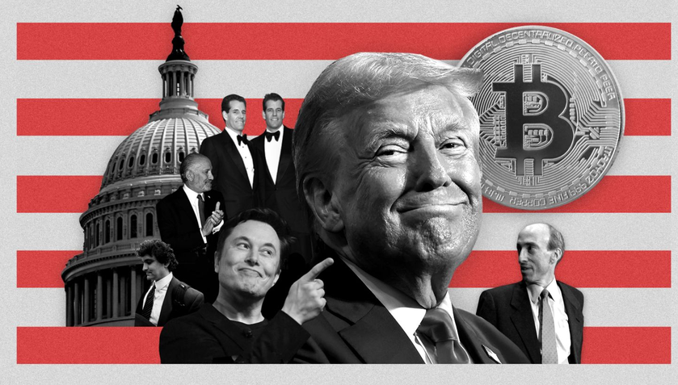
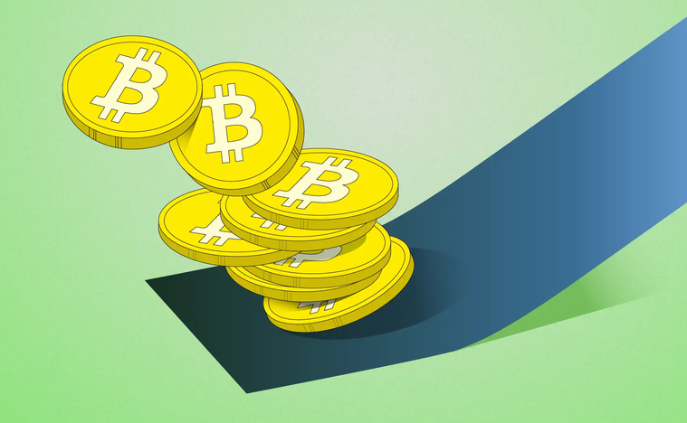

This blog post isn't so much a rant as it is a lament. After the 2008 finanical meltdown, either a person or a group of people managed to program and code the Bitcoin blockchain.
And it had an entire way of verifying Bitcoin, hashing more, but it was finite, meaning that it wasn't an infinite supply like the paper dollar...which gave it a more unique value, like a digital gold.
This was supposed to be like a "**** YOU" to the system where everyday people had their own unique form of payment that couldn't be devalued, inflated, taxed, tracked, or what not.
Now most of cryptocurrency is a scam, and those who benefit the most tend to be the Billionaire class and other rich people. Without all of the benefits that were promised, Bitcoin has became a huge factor in the market, and if crypto crashes, it will hurt the working class who didn't even buy into it. So...how did it get like this?
I think one destructive blow to this decentralized philosophy was how people started to look at crypto as an asset rather than money itself.
People would invest in Bitcoin and other forms of crypto, and even large companies and exchanges would buy into them. It went from mining crypto and paying people with it to investing in crypto and then holding the bag.
Well, the 1% (Billionaires, politicians, corporations, exchanges) who have the most money will then get the most out of it. So already the system has the leverage over crypto. This is already pretty bad but it gets worse.
Crypto was propped up all over the Internet as this way to get rich quick. Just buy into someone's new meme coin that they just created, and cash out when it goes through the roof.
Well too bad this stuff is pretty useless. Many people do a thing called a rugpull. A rugpull is where someone creates a cryptocurrency (so they have the most of it already), they have other people buy into it so the value goes up, then they cash out right before the crypto starts to tank and then everyone else loses their money!
Famous influencers have done this, and even politicans have done this. From Hawk Tuah to Trump and Milei, many people got bread from scamming their fanbases. And so many people who are at the bottom of the barrel, desperate for money, trust these gurus on the Internet and put their money into these coins or NFTs just to get scammed.
And so, consumerism infected crypto as it turned from a different currency to just a bag to hold.
Speaking of the mango, the president has been meeting with crypto billionaires (who donate to his campaigns) to deregulate crypto. Oh boy....
So many people have pumped their money into this stuff, and the 1% are the ones who hold most of the bag. Now this current Admin wants to allow banks to hold crypto. Crypto is becoming a huge cog in this overblown system.
If Bitcoin tanked, do you know what would happen? The rich would cash out, and when crypto tanks, the economy and the market would, furtherting this current recession that the world is going through.
And this is so disappointing, I mean I liked the idea of Crypto, it seemed so cool to have a your own means of payment that can't be touched. I always felt like it was kind of dystopian to NEED to use it because of how invasive the system had become.
I don't think that crypto was ever going to "save" the day, I just thought it was a neat project. But now it's causing a lot more harm than I even thought possible. It's sad that Nakamoto's dream was perverted to the extent that it was.

Return to main page